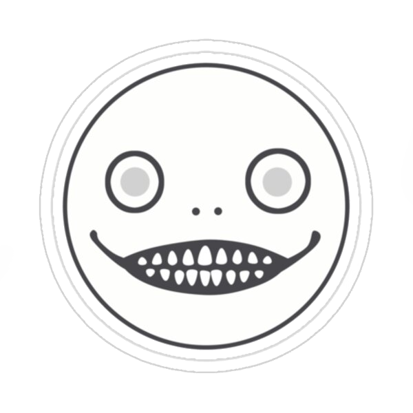

Esta aplicación web está destinada al análisis de autómatas, si bien se espera que como usuario ya tenga cierto conocimiento del tema, se ha especificado cada paso a seguir para el correcto ingreso de información. Por favor lea todo atentamente para evitar inconvenientes en el análisis
| Alfabeto |
|---|
| Alfabeto | Estados |
|---|
| Alfabeto | Estados |
|---|